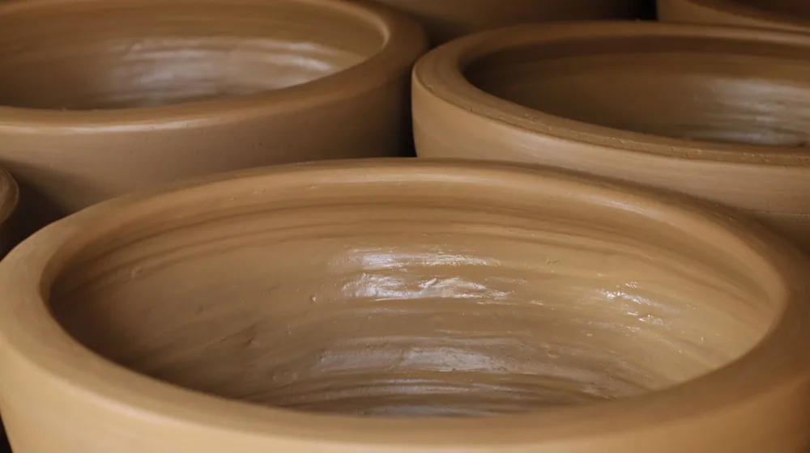

내 손으로 만드는 옻칠 식기, 원데이클래스 초보자도 가능할까요?
사진: HONG SON / Pexels (무료 이미지, 출처 표기)
옻칠 식기 원데이클래스, 초보자도 정말 가능할까요?

나만의 감성이 담긴 옻칠 식기를 직접 만들고 싶지만, 손재주가 없어서 혹은 과정이 복잡할까 봐 망설이는 분들이 많습니다. 결론부터 말씀드리면, 옻칠 식기 원데이클래스는 대부분의 경우 초보자도 충분히 참여하여 만족스러운 결과를 얻을 수 있도록 구성되어 있습니다.
일반적으로 원데이클래스에서는 목재나 금속 등으로 미리 형태가 잡힌 기물(그릇, 컵, 수저 등)에 옻칠을 입히는 방식으로 진행됩니다. 따라서 복잡한 기물 조형 과정 없이, 옻칠의 기본 기법과 아름다움을 체험하는 데 중점을 둡니다. 강사의 친절한 안내에 따라 차분히 칠 작업을 진행하면 멋진 나만의 옻칠 식기를 완성할 수 있습니다.
나에게 맞는 옻칠 원데이클래스 선택 가이드
다양한 옻칠 식기 원데이클래스 중에서 어떤 것을 선택해야 할지 고민될 수 있습니다. 다음 세 가지 기준을 고려하면 자신에게 맞는 클래스를 찾는 데 도움이 됩니다.
- 제작 기물의 종류: 컵, 접시, 수저 세트, 트레이 등 만들고 싶은 식기의 종류에 따라 클래스가 달라집니다. 평소 자주 사용하고 싶은 기물을 중심으로 선택해 보세요.
- 옻칠의 종류: 크게 전통 옻칠과 생활 옻칠(또는 안심 옻칠)로 나뉩니다. 전통 옻칠은 천연 옻 수액을 사용하며 깊은 색감과 뛰어난 내구성을 자랑하지만, 건조 시간이 길고 알레르기 유발 가능성이 있습니다. 생활 옻칠은 전통 옻칠의 단점을 보완하여 개발된 제품으로, 건조가 빠르고 알레르기 위험이 적어 초보자에게 적합할 수 있습니다.
- 클래스 진행 방식: 1회 만에 완성하는 체험 위주의 클래스부터 여러 회차에 걸쳐 좀 더 깊이 있는 기법을 배우는 클래스까지 다양합니다. 자신의 시간과 목표에 맞춰 선택하는 것이 중요합니다.
2026년 8월 기준으로 많은 공방에서 생활 옻칠을 활용한 원데이클래스를 운영하고 있어 접근성이 높은 편입니다. 정확한 사항은 각 공방의 공식 홈페이지나 문의를 통해 다시 확인하시길 권장합니다.
옻칠 식기 만들기, 실제 과정은 이렇게 진행됩니다
옻칠 식기 원데이클래스는 보통 다음과 같은 단계로 진행됩니다. 클래스마다 세부적인 차이는 있을 수 있습니다.
- 기물 선택 및 표면 정리: 미리 준비된 목기나 금속 기물 중 만들고 싶은 것을 선택합니다. 기물의 표면을 고운 사포로 매끄럽게 다듬어 옻칠이 잘 흡착되도록 준비합니다. 이 과정은 강사의 지도에 따라 안전하게 진행됩니다.
- 초칠 (초벌 칠): 옻칠을 얇게 한 번 도포하는 과정입니다. 옻칠은 생각보다 끈적하고 다루기 어려울 수 있으므로, 강사가 시연하는 방법을 잘 따라 하는 것이 중요합니다. 붓으로 꼼꼼히 칠한 뒤 건조실에서 일정 시간 건조합니다.
- 중칠 (재벌 칠): 초칠이 완전히 건조된 후, 다시 한번 옻칠을 도포하여 색감과 견고함을 더합니다. 이 과정에서도 기물 표면의 이물질을 제거하고 매끄럽게 다듬는 작업이 동반될 수 있습니다.
- 상칠 (마무리 칠): 마지막으로 옻칠을 칠하는 단계로, 식기의 완성도와 광택을 결정합니다. 섬세한 붓 터치와 깨끗한 마무리가 중요하며, 충분한 시간을 들여 건조해야 합니다.
- 최종 건조 및 완성: 모든 칠 작업이 끝난 후, 작품은 습도와 온도가 적절히 유지되는 건조실에서 최소 3일에서 7일 이상 건조됩니다. 옻칠은 외부 환경에 민감하므로 충분한 건조 기간이 필요합니다. 완성된 식기는 공방에 직접 방문하여 수령하거나 택배로 받을 수 있습니다.
원데이클래스 수강 전 꼭 알아둘 주의사항
성공적인 옻칠 원데이클래스를 위해 다음 사항들을 미리 확인하고 준비하는 것이 좋습니다.
- 옻 알레르기 여부 확인: 천연 옻칠의 경우 '우루시올' 성분 때문에 피부가 가렵거나 붓는 등 알레르기 반응이 나타날 수 있습니다. 평소 옻닭 등을 섭취했을 때 알레르기 증상이 있었다면, 생활 옻칠 클래스를 선택하거나 미리 공방에 문의하여 안전 조치를 확인해야 합니다. 대부분의 공방에서는 장갑 착용을 필수로 안내합니다.
- 복장 준비: 옻칠은 옷에 묻으면 잘 지워지지 않으므로, 작업복이나 오염되어도 괜찮은 편안한 옷을 착용하는 것이 좋습니다. 앞치마를 제공하는 곳도 많으니 미리 확인해 보세요.
- 건조 및 수령 기간: 옻칠은 충분한 건조 시간을 필요로 하므로, 클래스 당일에 작품을 바로 가져갈 수 없는 경우가 대부분입니다. 건조 및 수령까지 걸리는 시간(보통 3~7일)과 수령 방법을 미리 확인해야 합니다.
- 환기 시설 확인: 옻칠 작업은 특유의 향이 발생할 수 있으므로, 공방의 환기 시설이 잘 되어 있는지 확인하는 것이 좋습니다.
나만의 옻칠 식기, 오래도록 사용하는 관리 노하우
정성껏 만든 옻칠 식기를 오랫동안 아름답게 사용하려면 올바른 관리법이 중요합니다.
- 첫 사용 전 세척: 완성된 옻칠 식기는 미지근한 물에 부드러운 스펀지와 중성세제를 사용하여 깨끗하게 씻어낸 후, 부드러운 천으로 물기를 닦아 완전히 건조시켜 사용합니다.
- 평소 세척: 사용 후에는 즉시 세척하는 것이 좋으며, 수세미나 철 수세미처럼 거친 도구는 옻칠 표면을 손상시킬 수 있으므로 피해야 합니다. 부드러운 스펀지나 면 행주로 부드럽게 닦아주세요.
- 보관 주의사항: 직사광선이 내리쬐는 곳이나 고온 다습한 곳, 극도로 건조한 곳에 보관하면 옻칠이 변색되거나 갈라질 수 있습니다. 서늘하고 통풍이 잘 되는 곳에 보관하는 것이 이상적입니다.
- 사용 시 주의사항: 옻칠 식기는 전자레인지, 식기세척기, 오븐 사용이 불가합니다. 뜨거운 냄비나 튀김 요리처럼 고온의 음식을 직접 담는 것도 피하는 것이 좋습니다.
🔗 이 글도 함께 보면 좋아요: 집에서 이화주 만들기, 초보도 성공하는 키트 활용법
관련 추천 상품
옻칠 식기, 옻칠 공예, 원데이클래스 옻칠 관련 인기 상품 보러가기
이 포스팅은 쿠팡 파트너스 활동의 일환으로, 이에 따른 일정액의 수수료를 제공받습니다.